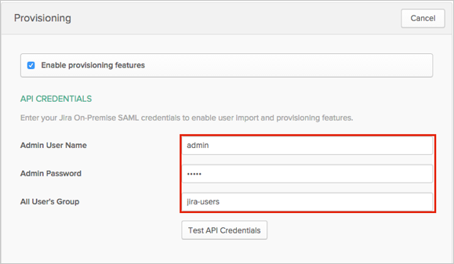
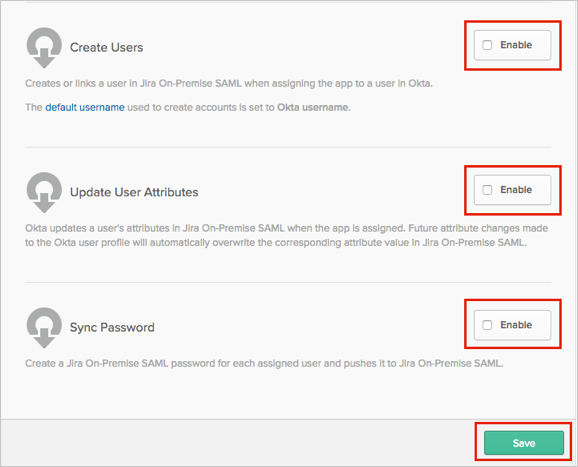

This guide provides the steps required to configure Provisioning for Jira On-Premise.
The following provisioning features are supported:
Push new users
New users created through OKTA will also be created in the third party application.
Push profile update
Updates made to the user's profile through OKTA will be pushed to the third party application.
Push password update
Changes made to the user's password will be pushed to the third party application
Import new users
New users created in the third party application will be downloaded and turned in to new AppUser objects, for matching against existing OKTA users.
Group Push
Groups and their members can be pushed to remote systems. See Using Group Push for more details.
Import profile updates
You are now ready to configure your Provisioning settings as follows:
In the API Credentials section, enter the following:
Admin User Name: An admin username, with rights for user provisioning.
Admin Password: The admin password.
All User’s Group: A group name, from which users are imported.
Note:
The default group for Jira Software is jira-software-users or jira-users depending on your Jira instance. Check your default group by navigating to JIRA site administration > User Management > Groups.

Scroll down and Enable the required Provisioning features:

Click Save
.Jira On-Premise SAML does not support User's Schema Discovery.